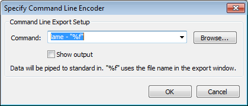

Exporting to an External Program
From Audacity Manual
This is a way to export to the installed LAME MP3 encoder or FFmpeg encoder with additional parameters not supported in the options dialogs in the Export Audio Dialog. Command-line export could also be used to export to the very latest versions of LAME or FFmpeg, to an alternative MP3 encoder or to a specialised encoder in a format not otherwise supported by Audacity.
- Accessed by: , then choose (external program) and click the button
- 
Specify Command Line Encoder
From the Export Audio dialog, choose the file name and extension, select (external program) in the "Save as" box, then click the button.
Command Line Export Setup
- Command: Type:
- The path to the program
- If the program syntax requires it, space then the infile command
- Space, hyphen
- If required, space then valid output options for the file
- If the program syntax requires it, space then the outfile command
- Finally (assuming file output), space then "%f".
- The "%f" command passes the file name and extension entered in the Export Audio Dialog as the output file of the external program. Two default commands are provided, lame - "%f" and ffmpeg -i - "%f" .
If you are exporting to MP3 with LAME, there is a complete list of commands including metadata tags on the usage page. For example, the default LAME command:
| lame - "%f" |
creates a 64 kbps (mono) or 128 kbps (stereo) constant bit rate MP3 at quality level "3". The command string:
| lame - -v -b 112 -c -p "%f" |
produces a variable bit rate MP3 of minimum 112 kbps bit rate, with a copyright marker and CRC error checking enabled.
By default, both ID3v1 and ID3v2 tags are exported. The following command writes a title tag "my song title" and year tag "2001" in ID3v1 (at the bottom of the file) and ID3v2 (at the top of the file):
| lame - --tt "my song title" --ty 2001 "%f" |
To export only ID3v1 or ID3v2 tags use --id3v1-only or --id3v2-only, for example:
| lame - --id3v1-only --tt "my song title" --ty 2001 "%f" |
If exporting using FFmpeg, you can view the FFmpeg command-line usage in the FFmpeg documentation. Guidance on valid metadata tags for various formats supported by FFmpeg can be found at http://wiki.multimedia.cx/index.php?title=FFmpeg_Metadata. For example this command exports to 256 kbps MP2 using FFmpeg:
| ffmpeg -i - -acodec mp2 -ab 256000 "%f" |
Note that accessing the LAME or FFmpeg command-line program with just the "lame" or "ffmpeg" command only works on Windows and Linux, assuming LAME or FFmpeg are installed on the system in the standard location. On Windows, this requires that you used the LAME or FFmpeg EXE installer and did not change the installation directory. For using a zip version of LAME or FFmpeg and on Mac OS X, the full path to the command-line program must be given. The path must be enclosed inside quotes if there are any spaces in the path.
Here is an example of a command to FFmpeg in an arbitrary location on Windows, forcing the exported codec to Apple lossless:
| "E:\FFmpeg for Audacity\ffmpeg.exe" -i - -acodec alac "%f" |
When choosing the file name for the Apple lossless file, we will add the extension ".m4a" (without quotes) to specify the M4A file format.
Finally, here is an example command to FFmpeg in an arbitrary location on Mac OS X, setting metadata for genre and artist/composer in an exported M4A file with the standard AAC (lossy) codec. In this case it is thus not necessary to specify -acodec in the command:
| /Applications/FFmpeg_for_Audacity_on_OSX/ffmpeg -i - -metadata genre="pop" -metadata author="Jo S" "%f" |
- Browse...: Opens a "Find path to command" window where you can select the command-line program you want to use. Clicking "Open" will then enter the path to that program in the "Command:" box, ready for you to add the commands and "%f" after the path.
- Show output: If checked, a Command Output window in Audacity will display a success or failure message from the external program. If unchecked, the window will only appear in the case of an error message.